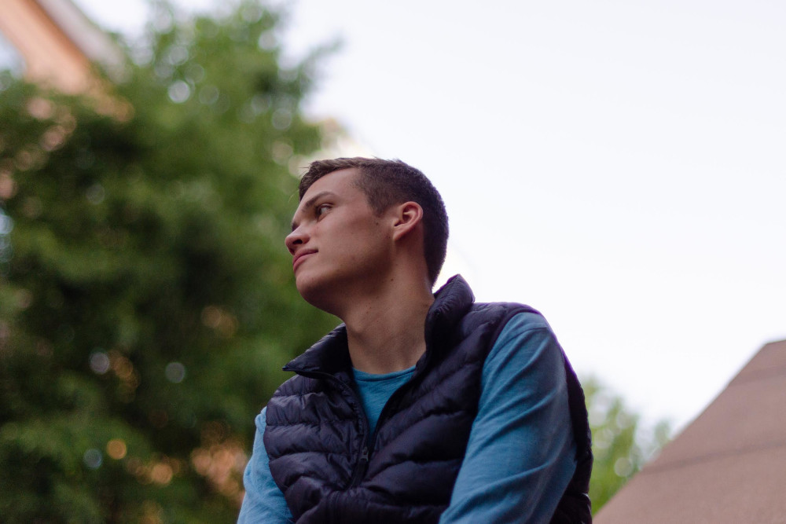
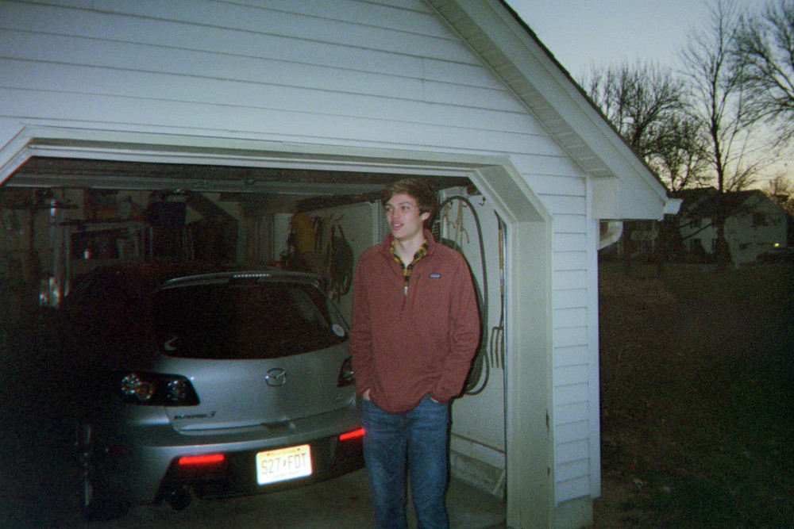

luke novak
luke novak



welcome to my site
Hello. If you're here, that means that you wanted to learn more about me. You already know my name, since it's at the top of the page. I am currently a student at Northeastern University in Boston, MA. I've worked in full-stack and back-end software engineering at Apple and TripAdvisor. At Northeastern, I run, code, and play music on the radio. If you're interested in what I've been playing recently, you can check out my spinitron profile
places you might know me from:
i have a question/i need to know more about you/i wanna work with you
If any of these three things apply to you, let's talk. Email me at contact@nluken.com